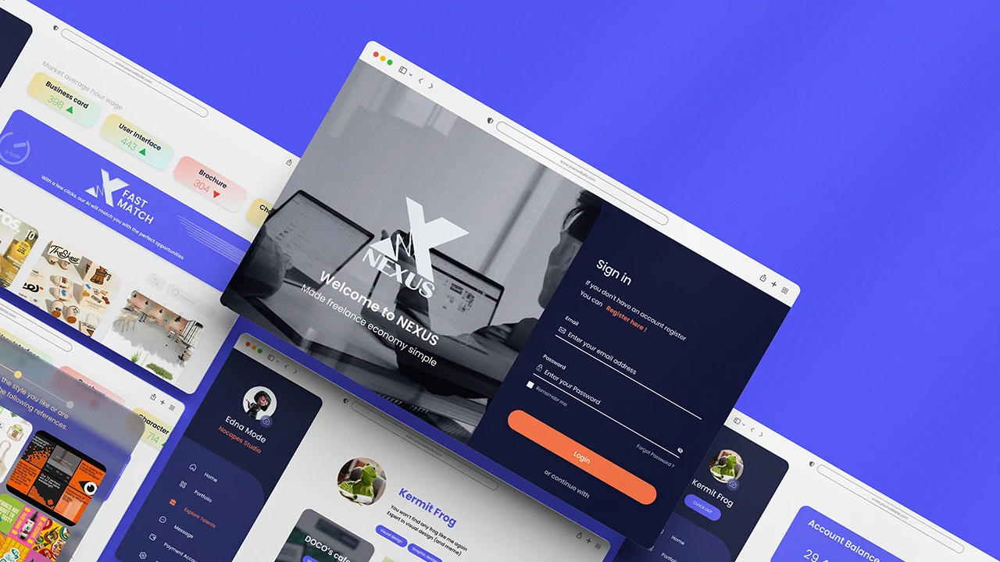
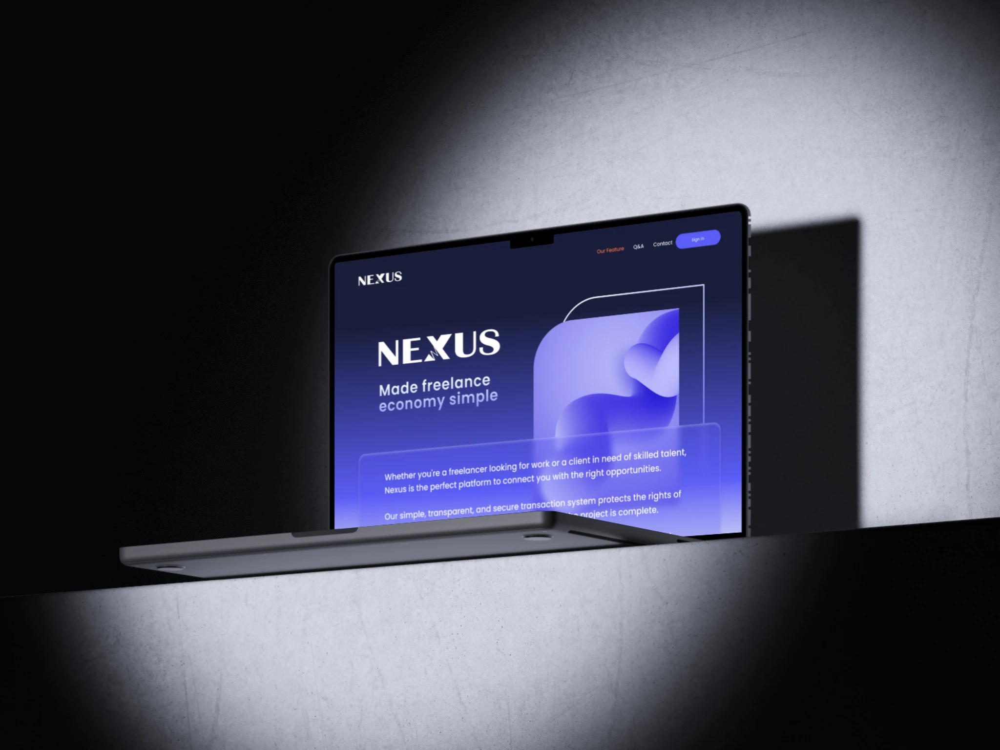
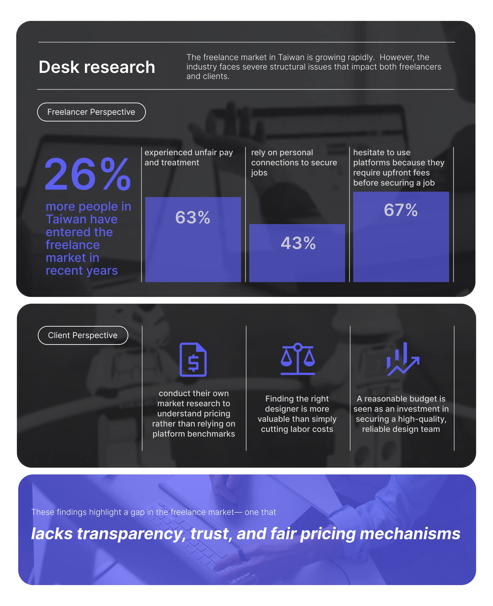
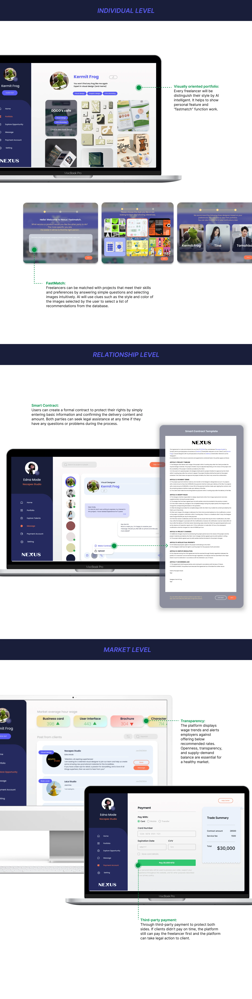
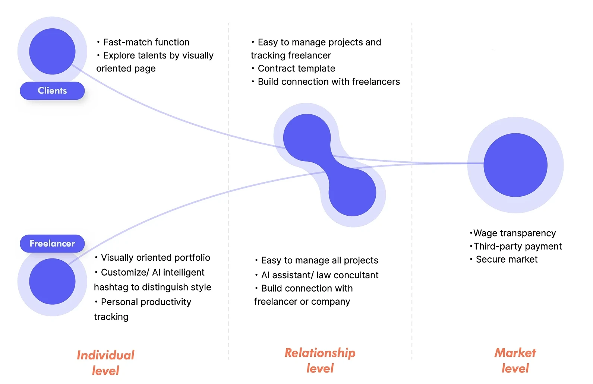
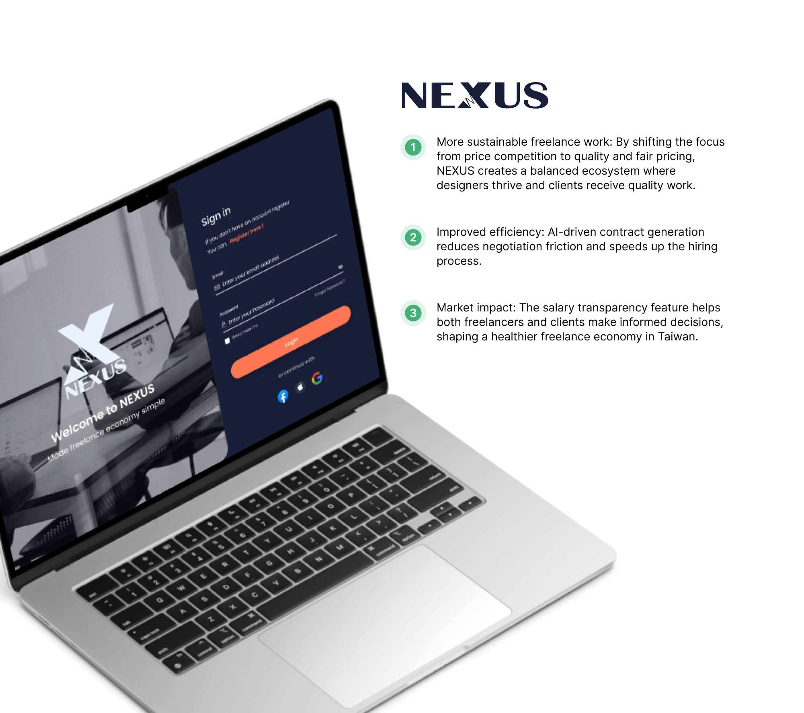
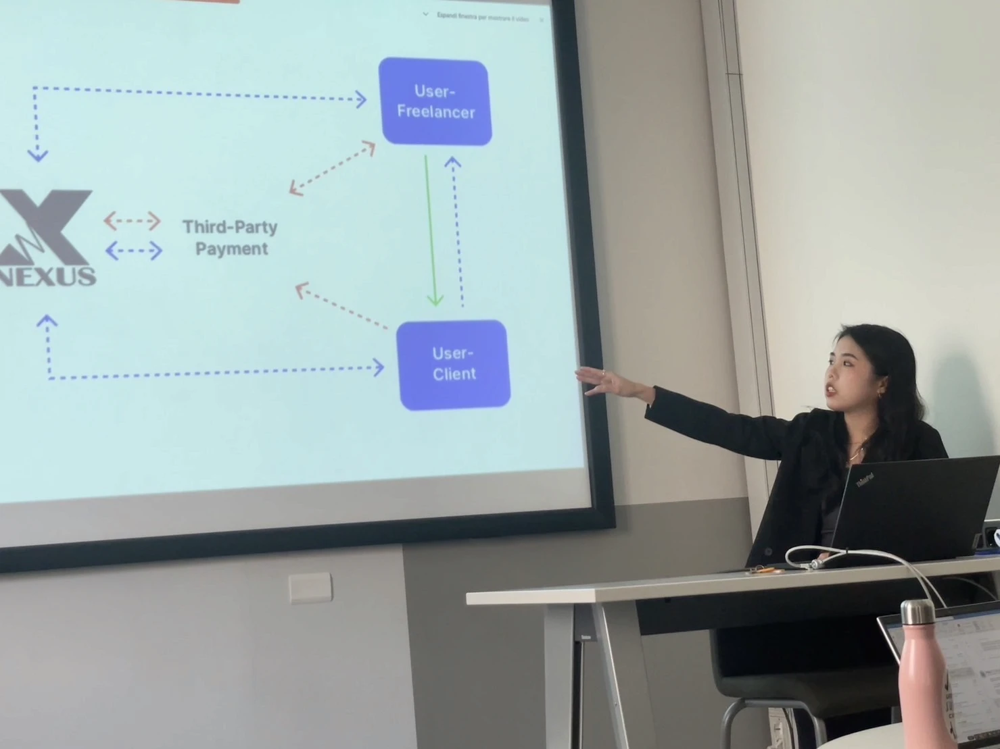

NEXUS bridges the gap by introducing a visually driven matching system, AI-assisted contract generation, and transparent salary benchmarks, ensuring a fairer and more efficient freelance ecosystem

The freelance market in Taiwan faces a major challenge: platforms prioritize bidding-based revenue, pushing designers to undercut prices. This not only lowers fair wages but also drives skilled designers away, creating an unsustainable ecosystem.

NEXUS bridges the gap by introducing a visually driven matching system, AI-assisted contract generation, and transparent salary benchmarks, ensuring a fairer and more efficient freelance ecosystem

To address these issues, a platform that fosters equitable collaboration and streamlines the hiring process is essential.
How might we create a secure market for freelancer in Taiwan through a matching platform with features of visually oriented portfolio and project manage?




Una, through a well-structured, research-driven approach, addresses critical challenges in the freelance market. By synthesizing insights from both freelancers and clients, she delivers a solution that enhances transparency, trust, and fairness. The platform concept reflects a strong understanding of market dynamics, while the UI design is both intuitive and visually compelling. A well-executed and thoughtful project with real-world potential.
Polimi Service Design Team